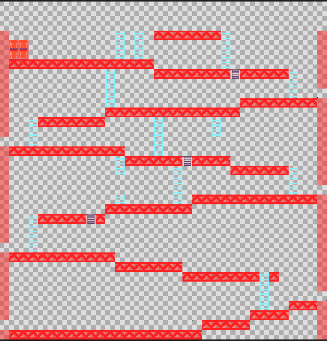
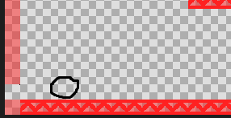
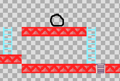
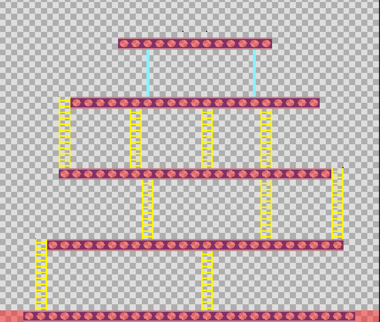
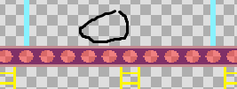

|
| Itzuli atzera |
Hemen istoria eta helburu deskribapen txiki bat ikusiko duzu.
| Lehenengo mapa agertuko da hau, hemen Mario, Donkey-Kong eta Printzesa dira pertsonai nagusiak, Mario goruntz egin behar du etsaiak saihestuz Printzesa ikutu arte, eta Donkey-kong barrikak botako ditu. |
 |
| Hau Marioren "spawn" da lurrean kokatuta, Mario hau esango du jokoa hasten denean "Printzesa, banoa zure bila!" eta Marioren helburua da Printzesa askatzea, goruntz egin behar du etsaiak sahiestuz |
 |
| Hau Printzesaren "spawn" da, Printzesa ez da mugituko, bakarrik Mariori itxarotzen egonko da goian. |
 |
| Hau Donkey-Kong "spawn" da, Kong bakarrik barrikak botako ditu goitik, horrela Mario sailtasun gehiago eukiko ditu gora iristeko eta ez du itzegiten. |
|
| Mario Printzesa ikutzen duen unean lehenengo mapan, mapa hau agertuko da, hemen Mario Lehen bezala egin behar du, baina ez dira egongo barrikarik, hemen sua egongo da mugitzen solairuetan. |
 |
| Hau Marioren "spawn" da lurrean kokatuta, Mario hau esango du jokoa hasten denean "E? non zaude? berriro igoko naiz" eta Marioren helburua da Printzesa berriro askatzea azkeneko aldiz, goruntz egin behar du etsaiak sahiestuz. |

|
| Hau Printzesaren "spawn" da, Printzesa ez da mugituko berriz, bakarrik Mariori itxarotzen egonko da goian jokoa irabazteko. |

|
| Hau Donkey-Kong "spawn" da, Kong ez du ezer ez eginko, bakarrik Mariori itxarotzen egonko da. |
 |